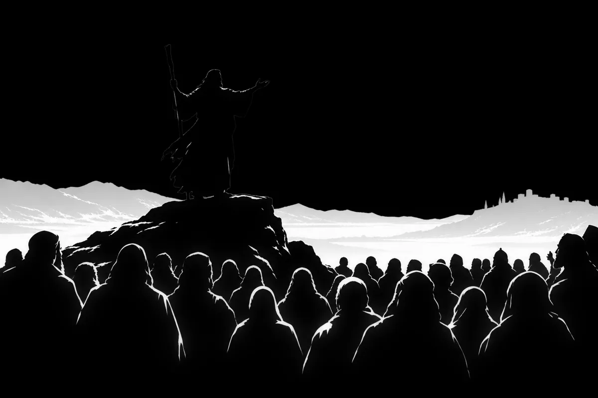

Yesterday's prophecy
The prophecy
- Consulting the flames…

How the prophecy is made
Every night just after midnight UTC, Zoroaster reads the day's edits to English Wikipedia and ranks about one and a half million recently edited pages by how likely each is to burst the next day: far more edits than usual for that page, from at least two editors (accounts editing dozens of pages a day are left out).
The ranking comes from a gradient-boosted model trained on three years of Wikipedia's edit history. It sees only each page's own recent activity and the calendar, not the news. Pages already busy are likelier to stay busy, but most of tomorrow's bursts are new, so most of the prophecy won't come true: in testing, about one in five of the top 100 did.
A listed page is a statistical forecast of editing activity, not a claim that anything has happened or will happen.